A professora primeiramente se dirigiu para outra sala para passar contéudo a eles, enquanto isso a Edileusa foi a sala para conversar com os alunos que tiveram baixo rendimento, depois a professora apresentou obras sobre o artista Diego Max,que se parecia mais com o surrealismo, combinando varias imagems em uma e fazendo edições nelas para dar efeitos interessantes e incriveis.
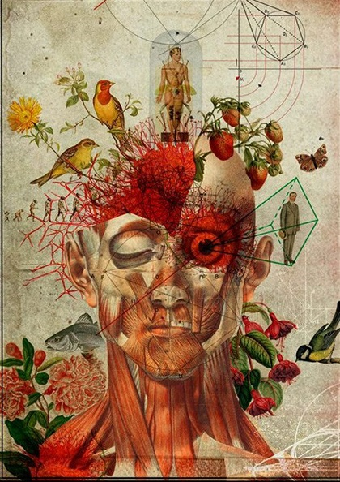 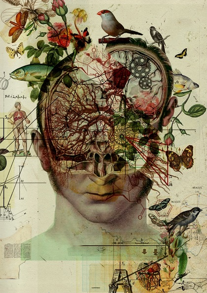Algumas obras do artista Diego Max
Depois a professora começou a explicar como eram feitas as fotografias antigamente, dizendo que usam papeis fotossensíveis, além de vários resíduos químicos para fazer a imagem da fotografia aparecer no papel e fixar-se nele. Depois ela mostrou que existem vários tipos de coisas que podem fazer gravações ou marcas, como a pele por exemplo.
Continuação da audição de trechos de músicas do repertório dos alunos
Professora passou uma tarefa para escolher um poema ou poesia, do Pré-modernismo ao tropicalismo para fazermos uma foto representando esse poema ou poesia.
A professora explicou de novo acrescentando que poderia usar efeitos,ângulos e texturas diferentes para podermos alcançar a imagem que desejamos para representar o poema ou a poesia
A professora começou dando uma introdução sobre planos,ponto de fuga e como dar profundidade a objetos. Após isso ela começou a passar no slide sobre fotográfos famosos.
Foi contratada para registrar índios em alguma parte da região norte do Brasil, utilizando fotos tiradas do dia-a-dia dos indígenas. Gosta especialmente de editar as fotos deixando elas em preto e branco.
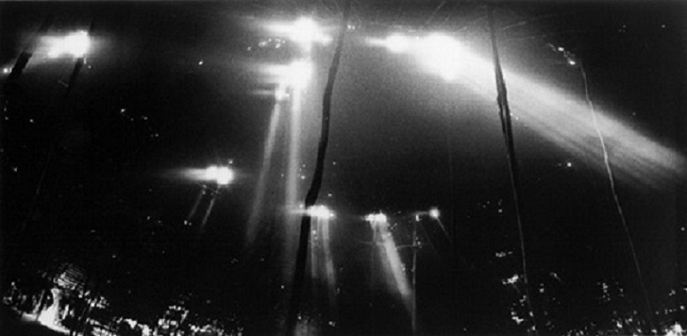 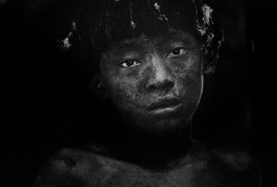Diferente da Claúdia ele trabalha a cultura africana,e ele que fez o cenário e montou o jeito que a imagem iria ficar. Ele tem mania de usar os figurinos com o cenário para confundir um pouco a mente
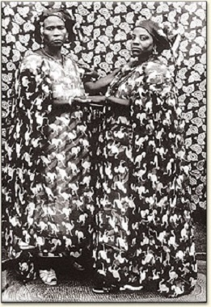 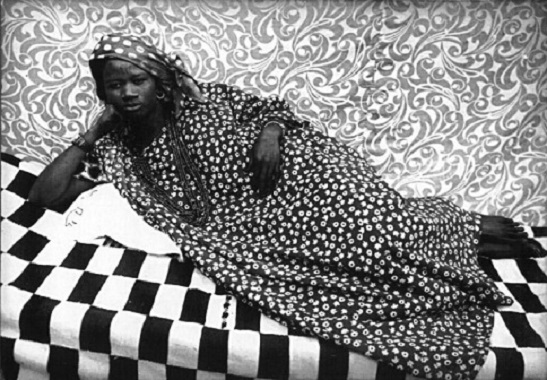Registro de projetos ambientais,fotografia documental,ele explora a luz e objetos dando uma sensação deles serem continúos.
Trabalha com objetos artistícos onde a pessoa pode ter uma visão diferente deles manipulando eles. 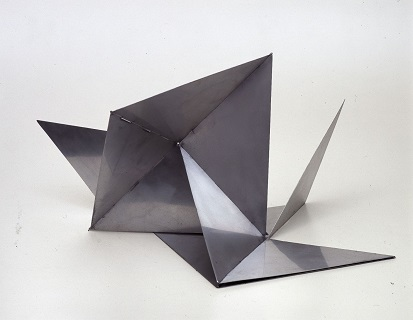 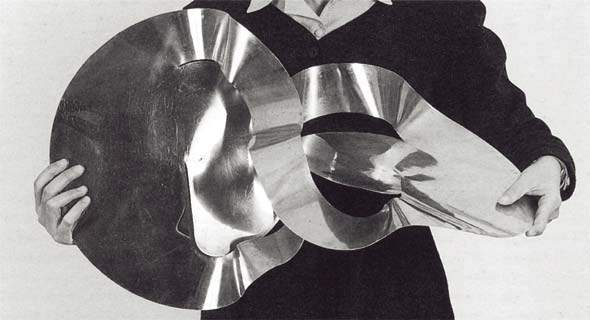
Depois a professoa explicou como um aluno em uma apresentação utilizou excelentemente os sentidos para fazer uma perfomaces para a turma
A professora recolheu os poemas dos alunos,eu peguei dois porque fiquei em duvída.
Morrer.
Morrer de corpo e de alma.
Completamente.
Morrer sem deixar o triste despojo da carne,
A exangue máscara de cera,
Cercada de flores,
Que apodrecerão - felizes! - num dia,
Banhada de lágrimas
Nascidas menos da saudade do que do espanto da morte.
Morrer sem deixar porventura uma alma errante...
A caminho do céu?
Mas que céu pode satisfazer teu sonho de céu?
Morrer sem deixar um sulco, um risco, uma sombra,
A lembrança de uma sombra
Em nenhum coração, em nenhum pensamento,
Em nenhuma epiderme.
Morrer tão completamente
Que um dia ao lerem o teu nome num papel
Perguntem: "Quem foi?..."
Morrer mais completamente ainda,
- Sem deixar sequer esse nome.
Não exijas mais nada.
não desejo
também mais nada,
só te olhar,enquanto
A realidade é simples e isto apenas.
Após isso a professora pediu para tirarmos uma foto com textura de qualquer coisa da sala, eu tirei do moletom do Gustavo.Bem...eu gostei dela.
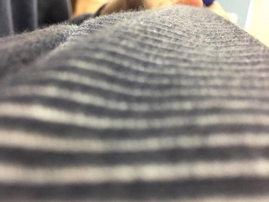Ah e nessa aula ela terminou os fotográfos restantes
Ele gosta de deixar as fotos em preto e branco e tirar fotos dos seres em seu cotidiano e do ambiente é claro, gostar de dar profundidade e mostrar detalhes das fotos minuciosos.
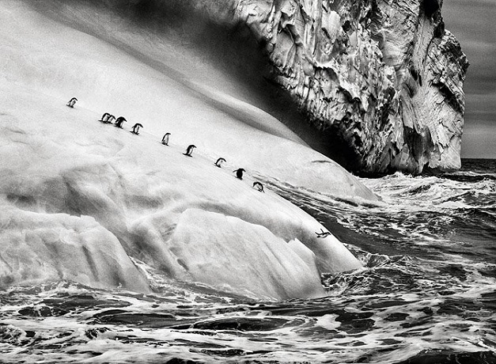 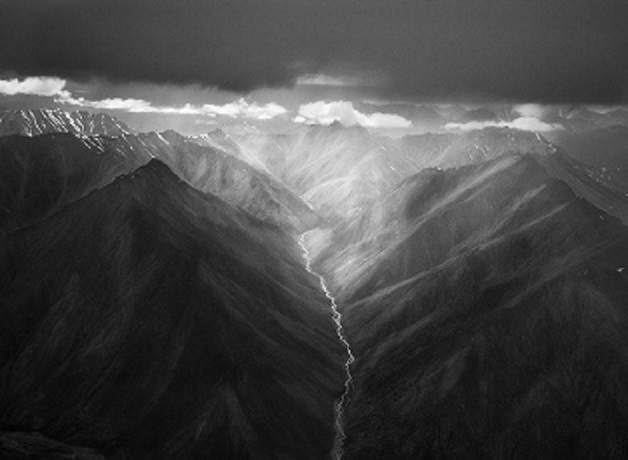 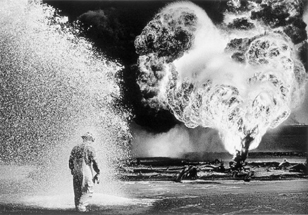 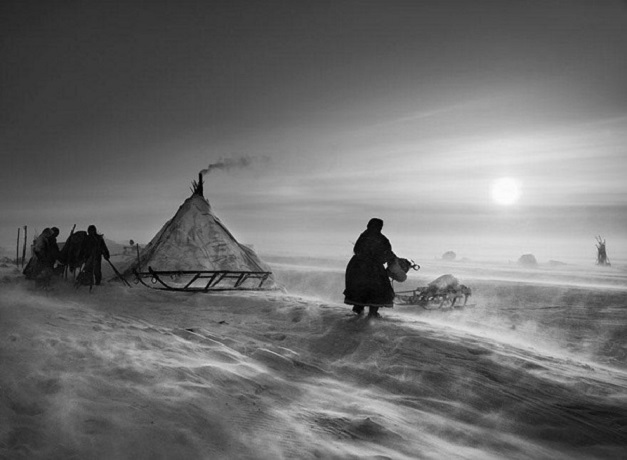Discussão sobre o trabalho ,analisando temas artísticos importantes do livro didático. Apresentação das fotografias com diferentes texturas presentes na sala e em objetos,roupas,etc. Obs:Eu faltei por isso peguei do João Marcos o relatório desse dia.